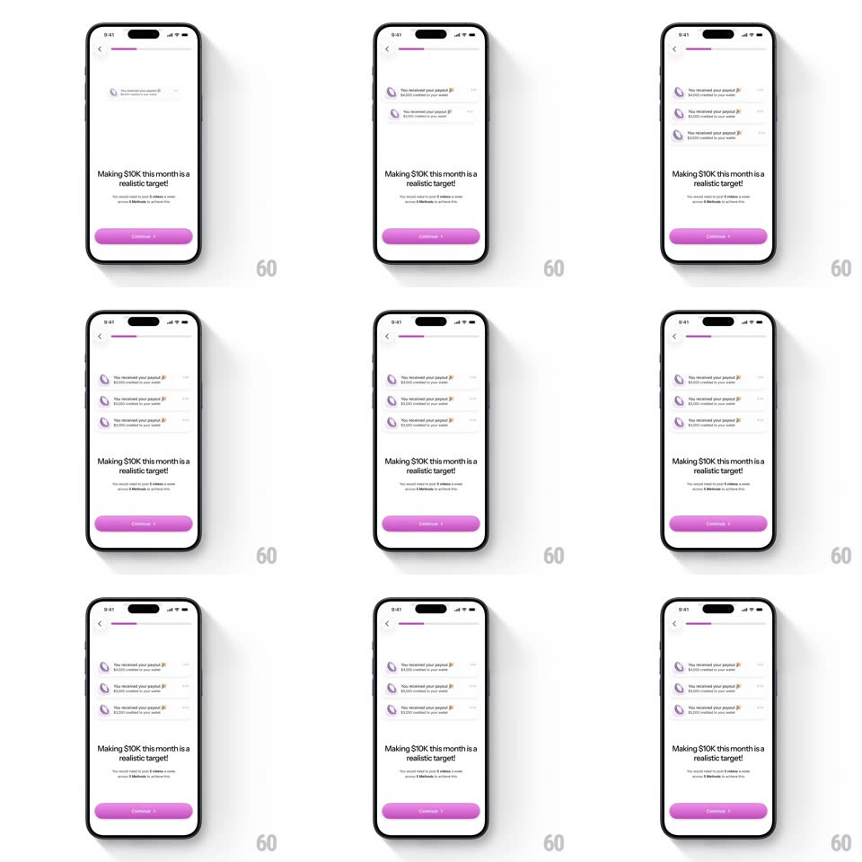

Media
Frame-by-frame

Rebuild this animation 1:1: Methods' onboarding proof moment - payout notification cards spring-pop in at the top one after another, pushing the headline and Continue button down the screen.

Rebuild this animation 1:1: Methods' onboarding proof moment - payout notification cards spring-pop in at the top one after another, pushing the headline and Continue button down the screen. ## Integration Integration: stack-agnostic spec - springs given as stiffness/damping, timed motions as duration + curve; map every value to your framework and animation library of choice. ## Scene A clean light onboarding screen: back chevron, a slim progress bar, the headline "Making $10K this month is a realistic target!" with a sub line, and a pink-purple Continue button. Payout notification cards stack at the top: each with a purple avatar, "You received your payout!" and a line like "$4,010.00 has been sent to your wallet". ## Motion spec Pattern: staggered springy notification cards popping in and pushing layout down. - The headline screen holds for ~600ms, then the first notification drops in from above the safe area (translateY -60 -> 0, spring ~320/16, ~400ms, visible overshoot) - and the headline + button physically slide down to make room (250ms, matching ease). - Each next card follows ~450ms later, stacking beneath the last with the same springy drop; the content below keeps stepping down with each arrival. - Each card lands with a soft shadow bloom (shadow radius 8 -> 16 -> 12, 300ms) so the stack reads as layered paper. - After three cards, the stack settles and the headline's sub line crossfades to its payoff variant (250ms). - The cards then hold, gently floating (top card only, +/-2px drift, 3s loop) while Continue pulses once (scale 1 -> 1.03 -> 1, 300ms). ## Calibration - The push-down is real layout motion - headline and button shift because the cards take space, not because they fade under an overlay. - Overshoot is the personality: every card visibly bounces past its slot and settles. ## Reduced motion Cards fade in staggered (200ms, 150ms apart) without springs; layout steps without animation. ## Don't miss - Amounts differ per card - this is a feed of real payouts, not the same notification cloned. - Continue stays pinned to the bottom safe area throughout - it slides with the push but never leaves reach.